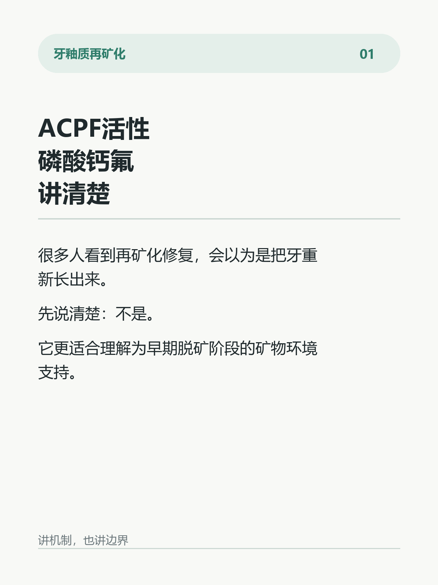
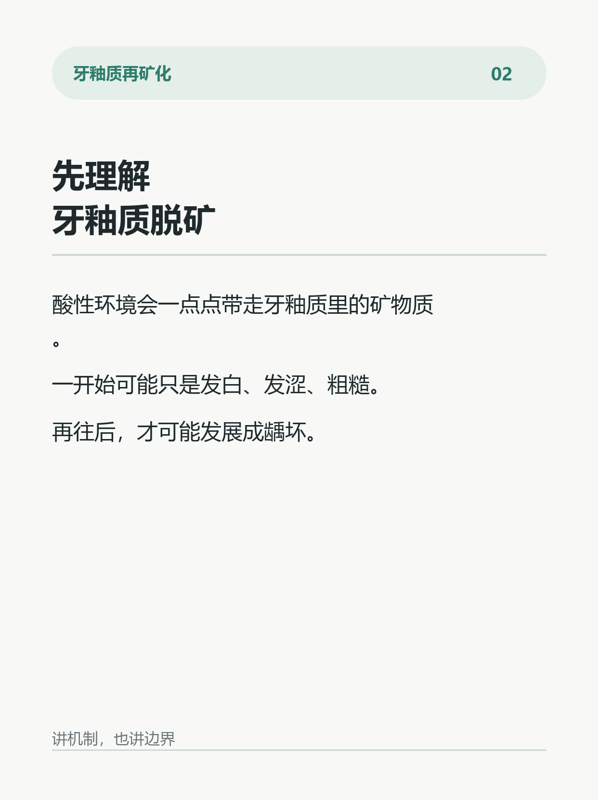
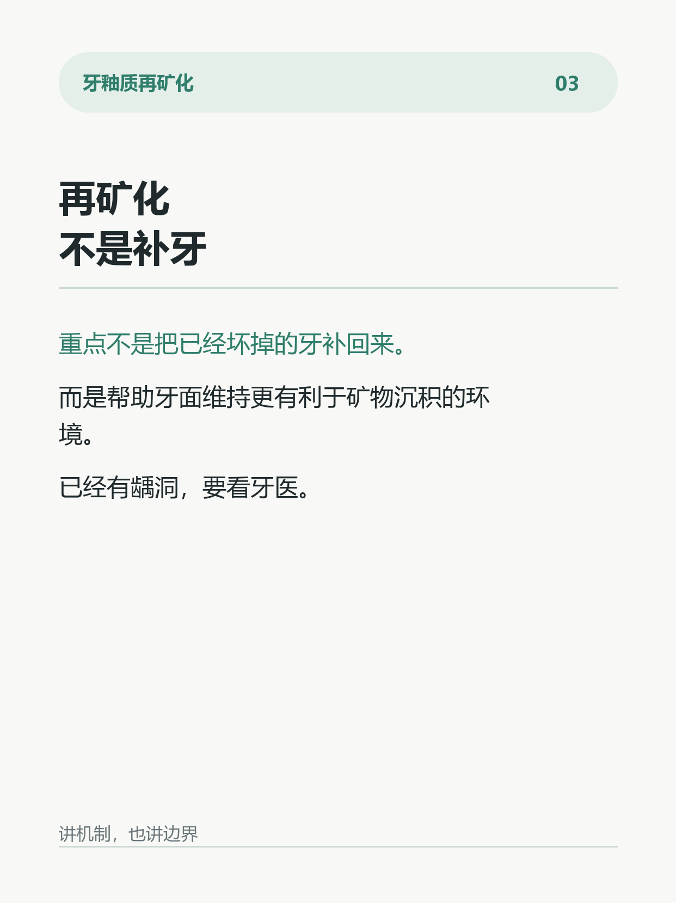
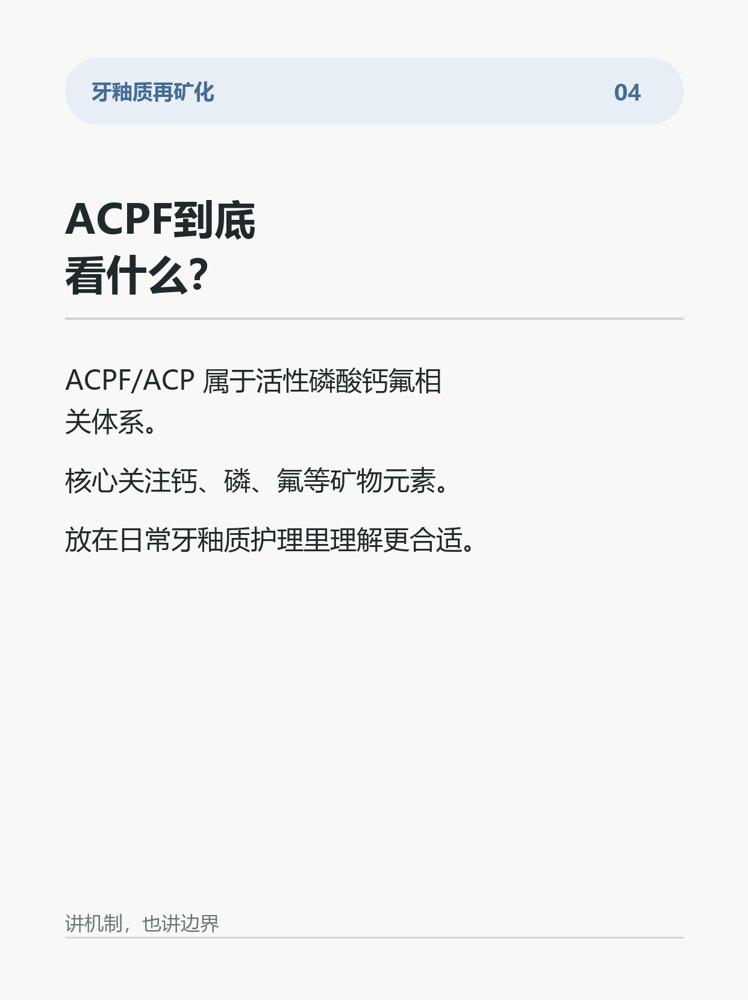
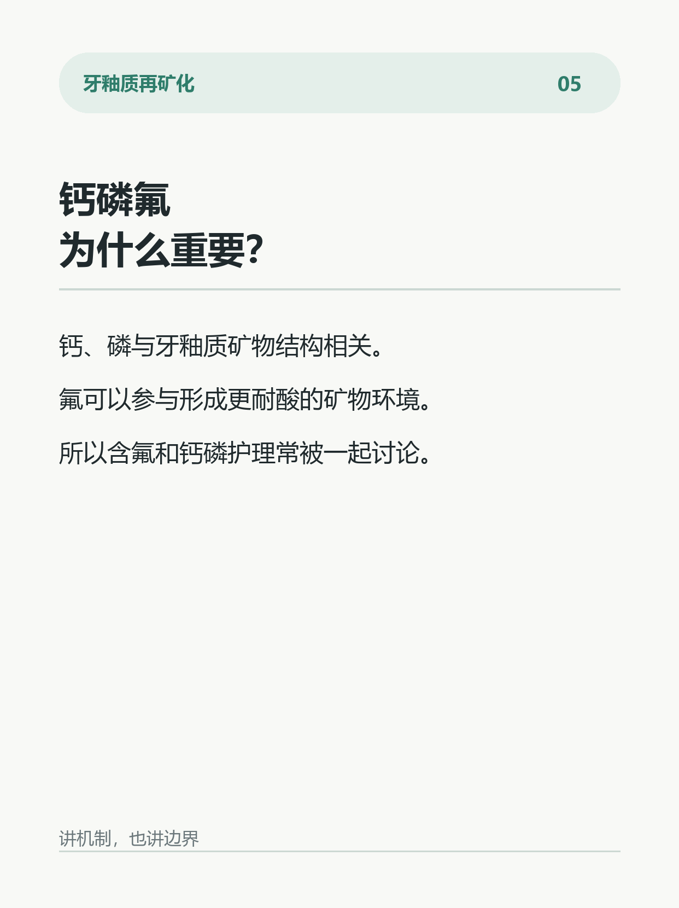
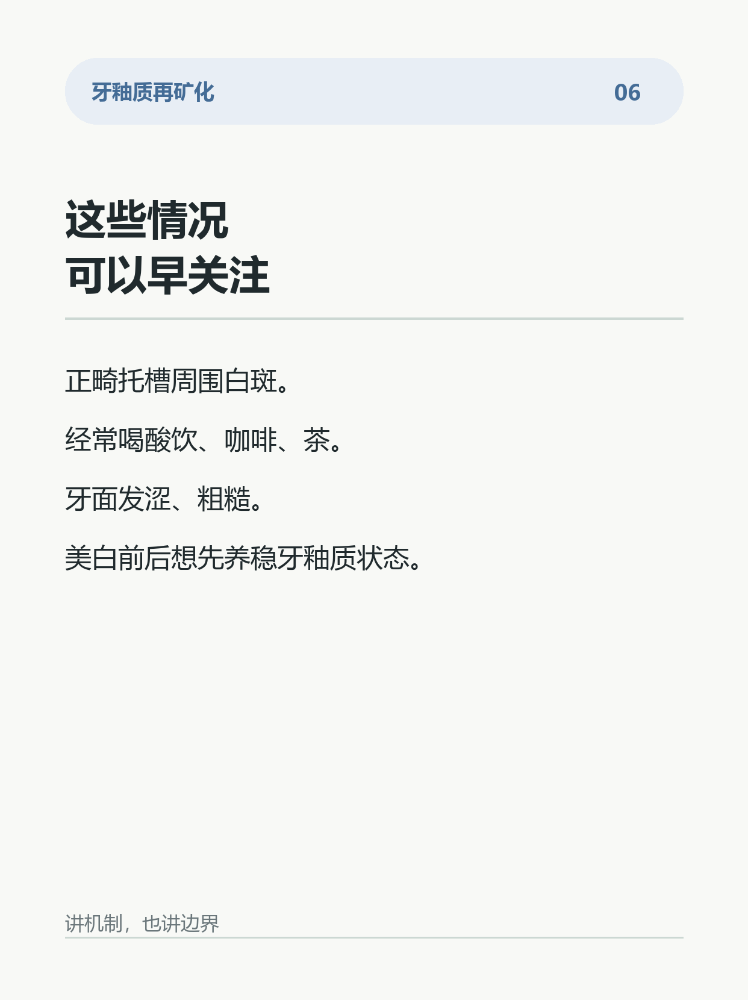
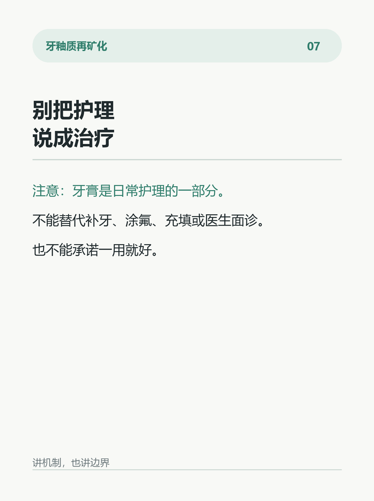
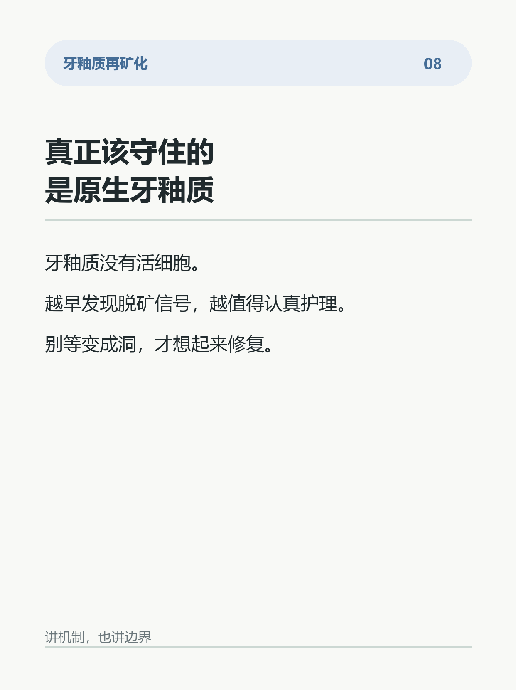

ACPF活性磷酸钙氟讲清楚
图文卡片








正文
很多人看到“牙釉质修护”“再矿化修复”，第一反应是：
是不是能把牙重新长回来？
先说结论：不是。
牙釉质没有活细胞，已经形成龋洞、明显缺损，不能靠牙膏刷回去。
真正值得关注的是更早一步：
牙面还没有坏成洞，只是开始发白、发涩、粗糙，或者正畸托槽周围出现白斑。
这个阶段，核心问题通常是“脱矿”。
酸性环境会一点点带走牙釉质里的矿物质。
如果清洁、饮食频率、含氟和钙磷矿物护理都跟不上，脱矿就可能继续发展。
所以再矿化护理的重点，不是承诺“治好”，而是帮助牙面维持一个更有利于矿物沉积的环境。
ACPF/ACP 这类活性磷酸钙氟体系，讨论的就是这个方向：
钙、磷，是牙釉质矿物结构相关的重要元素；
氟，可以参与形成更耐酸的矿物环境；
活性磷酸钙氟，则是把钙磷氟矿物体系放到日常口腔护理里理解。
简单说：
它不是补牙材料。
不是把牙釉质重新长出来。
也不是替代看牙。
它更适合放在这些场景里理解：
正畸期担心托槽周围白斑；
经常喝酸饮、咖啡、茶，牙面容易发涩；
美白前后想先把牙釉质状态养稳；
孩子或成人有早期脱矿风险；
日常想做温和的牙釉质矿物护理。
但边界一定要讲清楚：
已经有龋洞、疼痛、冷热刺激明显、白斑越来越大，建议面诊。
牙膏是日常护理的一部分，不是治疗方案。
好的牙釉质护理，不是追求一夜变白。
而是早点发现脱矿信号，少让牙釉质继续走弯路。
话题标签
参考来源
苏州信和隆医疗器械有限公司官网：复合活性磷酸钙氟 ACPF/ACP 技术资料；Hydroxyapatite toothpaste for prevention and remineralization of initial caries lesions: systematic review and meta-analysis, 2025；Enamel remineralization strategies using fluoride, calcium phosphate and biomimetic mineral systems: recent systematic review evidence, 2024-2025；河北医科大学学位论文：王梦阳《三类具有再矿化功能牙膏体外离子释放的研究》，2021
合规边界
当前版本已统一为 ACPF/ACP 活性磷酸钙氟产品成分口径。文案避免治疗承诺、替代补牙、保证防龋、永久变白等高风险表达。